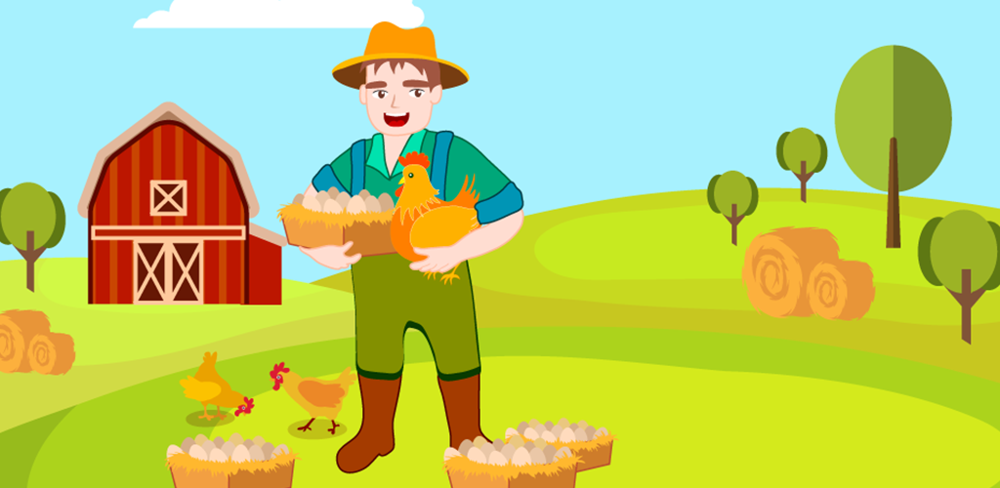

<ion-menu [content]="content">
  <ion-content>
    
    <ion-list>
      <button ion-item icon-start (click)="onNavigate(rootPage)">
        <ion-icon name="home"></ion-icon>
        Home
      </button>
    </ion-list>
  </ion-content>
  <ion-footer>
    <ion-list>
      <button ion-item icon-start (click)="onPush(aboutPage)">
        <ion-icon name="information-circle"></ion-icon>
        About
      </button>
    </ion-list>
  </ion-footer>
</ion-menu>

<ion-nav [root]="rootPage" #content></ion-nav>
